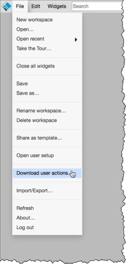
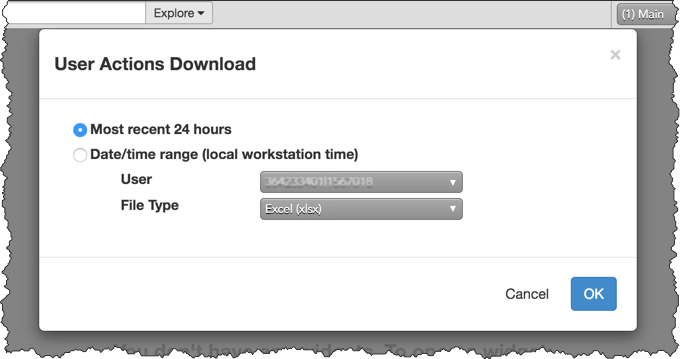
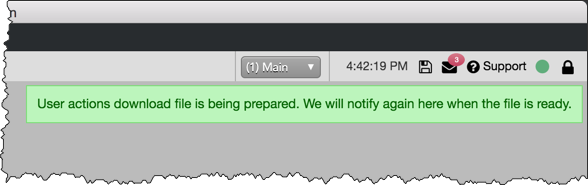
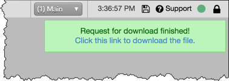

You can request a log of user actions from the workspace "File" menu. When requested, the log file is prepared by back-end servers and can be downloaded via a link similar to a fill download request.
The user action log file includes actions manually initiated by the user such as "BuyClicked", "TickUp", or "CancelOrdersClicked". Automated actions initiated from Autospreader or Algo servers are not included in the file.
Files are created just for your user actions. As an administrator, you can also request log files for other users in your company.
To download a user action log:
- Click File | Download user actions from the Workspace menu bar.

- In the User Actions Download screen, select the following options:
- Most recent 24 hours — Requests a user action log file for the last 24 hours. This is the default setting.
- Date/Time range (local workstation time) — Allows you to set a specific date and time range to collect user actions instead of the last 24 hours. The date and time picker allow you to set a Start time and End time for collecting data. TT supports requesting user data for the last 7 days.
- User — Displayed only if you are an administrator. This option allows you to request an action log for users in your company. Only one user can be selected at a time. You can search for a user with a few keystrokes or select a user from the drop-down menu.
- File Type — Allows you to select a format for the log file: Excel, CSV, or JSON.

- Click OK.
The following status message appears in the upper right corner of the workspace to indicate that the log file is being prepared.

- After the file is created, click the link in the status message to download the file to your workstation.
